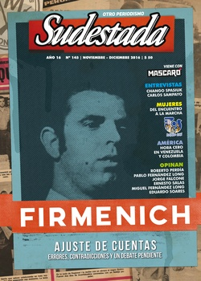

Buscar
Un sueño con Luis María
El Indio Solari lo menciona en dos canciones, pero la historia del músico platense Luis María Canosa sigue hasta hoy en una nebulosa. Fue una de las víctimas de la llamada Masacre En el Pabellón Séptimo de Villa Devoto, cuando en marzo de 1978 la crueldad de los carceleros terminó matando a decenas de presos. Uno de ellos era Luis María, un pibe sensible e inquieto, un cantante que integró la primera banda de Federico Moura, el dueño de una historia que el periodista Claudio Gómez rescata en esta crónica imperdible.
Edición N° 145
Noviembre-diciembre 2016
Revista bimensual
Comprar edición impresaSumario
- Firmenich. Ajuste de cuentas
- Algo hace ruido desde abajo
- Mujeres. Cambiar la historia sin pedir permiso
- Tres corazones en Villa Itatí
- Un sueño con Luis María
- Chango Spasiuk: "A veces cuando toco, puedo sentir como cuando era niño"
- Carlos Sampayo. "Este país se fue muchas veces a la mierda pero esta vez es muy peligroso"
- Venezuela. Entre el abismo y la esperanza
- Colombia. La paz del modelo extractivista
- Ser prisionero político palestino en Israel
- Excluidos
Compartir Articulo
Son las siete y media de la mañana y el penal de Devoto se altera. Cerca de cincuenta guardias invaden el pabellón séptimo. Se trata de una requisa, pero no una requisa de rutina: hay más guardias que de costumbre, más violencia que de costumbre. Y hay también refuerzos, muchos refuerzos con distintos uniformes. La mayoría de los presos todavía duerme. No tienen ni idea del calvario que van a padecer en las próximas horas. Sin anuncios ni advertencias, los guardias entran y pegan. Con palos en las manos, gritan y pegan. Con impunidad reglamentaria, revuelven todo y pegan. Empujan a los reclusos para que queden de frente a la pared, para que miren la nada. Los internos sólo pueden escuchar. El ruido de los palos cuando chocan contra las baldosas, contra los barrotes, contra los huesos. El ruido del miedo. Los obligan a que se desnuden, a que corran hasta un patio interno y a que vuelvan. Algunos se bancan los golpes en silencio, otros insultan por lo bajo, la mayoría reprime las ganas de reaccionar.
Nadie da explicaciones. No hace falta. Todos saben que esta requisa violenta es en realidad la revancha por el episodio del televisor. La noche anterior los detenidos miraban una película en el aparato en blanco y negro. Habían puesto el volumen al máximo para que todos pudieran escuchar. En este pabellón de 35 metros por 8 caben setenta presos, pero hay 161, y así, hacinados, intentaban concentrarse en la pantalla. Cerca de las diez y media de la noche un guardia se puso pesado.
–¡Apaguen ese televisor, carajo! –gritó desde una pasarela superior.
–Lo vamos a apagar a las doce y media, como todas las noches –respondió con firmeza Jorge Omar Tolosa, uno de los presos con más años en Devoto.
–¡Si yo les digo que se apaga, se apaga y listo! –insistió el guardia.
Hubo más cruces de palabras, algunos gritos, insultos de un lado y de otro. Después todo volvió a la calma y el aparato siguió encendido hasta que terminó la película. Ese mínimo gesto de rebeldía fue letal: aquel martes 14 de marzo de 1978, después de la requisa, los golpes y la represión, en el pabellón séptimo quedaron 64 presos muertos. Una de las víctimas es Luis María Canosa, aquel que Los Redondos recordaron en "Toxi-Taxi": "un sueño con Luis María, muerto cuando me decía, cada día veo menos, cada día veo menos, cada día veo menos, creo, menos mal".
***
Debo admitir que hasta hace unos meses Luis María Canosa era para mí un desconocido. Jamás me había preguntado siquiera quién sería ese tipo que el Indio Solari había mencionado en una canción. Pero un post en Facebook me despabiló: "Luis era un chico flaquito, rubio, que jugó en las inferiores de La Plata Rugby Club. A Luis sobre todo le gustaba la música. Integró una banda que se llamaba Dulcemembriyo y que en sus comienzos tocaba en las fiestas que se hacían en el bufet del club. Murió en la cárcel de Villa Devoto, en la masacre del Pabellón 7°. El Indio Solari lo recordó en dos canciones: 'Toxi-Taxi' y 'Pabellón séptimo'".
Ese texto lo escribió la coreógrafa platense Diana Montequín, hermana de Mariano y esposa de Pablo Balut, dos de los jugadores de La Plata Rugby que fueron desaparecidos durante la última dictadura. El recuerdo de Diana me provocó. Sabía que ese club había sido diezmado a mediados de los setenta, sabía que hubo veinte víctimas y sabía también que esa lista podría estar incompleta. Por eso, cuando leí ese texto de Diana supe algo más: iba a involucrarme con la historia de Luis María. Aunque no era un preso político y no tenía una historia de militancia, podría considerarse como otra víctima, una más, de La Plata Rugby Club.
Empecé a buscar por donde se suele empezar: Google. Los resultados me lanzaron una cantidad de puntas que se abrieron en abanico. En la vida de Luis María Canosa aparece Rocambole, el artista que hizo las tapas de los discos de Los Redondos. Está Dulcemembriyo, la banda que formó en La Plata junto con Federico Moura antes de que el líder de Virus fuera una estrella. Un viaje a Europa cuando apenas tenía 17 años. Una detención en Buenos Aires porque llevaba un par de porros encima. Una masacre en la cárcel de Devoto que el Servicio Penitenciario hizo pasar como un motín. Un delito que 36 años después fue declarado de lesa humanidad. Un libro, y la recomendación de ese libro que hizo el Indio en el recital que dio en Mendoza en 2013. Estos episodios son postales de una historia, fragmentos de un sueño con Luis María.
***
Sensible. Simpático. Buen pibe. Algo aventurero. Muy seductor. Con leves matices, aquellos que conocieron a Luis María coinciden en la descripción. Las pocas fotos que circulan de cuando era un adolescente y había formado la banda Dulcemembriyo lo muestran de esa manera: pelo rubio y lacio, sonrisa permanente, gesto despreocupado. No es un despropósito imaginarlo arriba del escenario de algún club platense cantando para decenas de chicas perdidas de amor...
(La nota completa en la edición gráfica de Revista Sudestada)
Comentarios
Claudio Gómez
Articulos más vistos


LIBRERÍA SUDESTADA

Colección infantil

Distribuidora de Libros

Suscripción

Sudestada en URUGUAY

Otros articulos de esta edición
 Musiqueros
Musiqueros
Chango Spasiuk: "A veces cuando toco, puedo sentir como cuando era niño"
Como un ritual pagano, cada vez que Chango Spasiuk edita un nuevo disco, el encuentro con Sudestada se hace inevitable. ...
 En la calle
En la calle
Tres corazones en Villa Itatí
Un barrio siempre es la historia de su gente. Por esa razón, la historia de Villa Itatí parece marcada por ...
 Nota de tapa
Nota de tapa
Firmenich. Ajuste de cuentas
No hay otro personaje político argentino que cargue con su estigma. Todo es sombra, mugre, historia turbia a su alrededor. ...
 Entrevista
Entrevista
Carlos Sampayo. "Este país se fue muchas veces a la mierda pero esta vez es muy peligroso"
Reconocido por su trabajo como guionista de historietas de la talla de Alack Sinner (en dupla con José Muñoz), la ...
 El pucho en la oreja
El pucho en la oreja
Excluidos
Hago una lista: negro, indio, inmigrante, anarquista, comunista, judío, cabecita negra, hippie, subversivo, gay, travesti. Más de cien años de ...
 Género
Género
Mujeres. Cambiar la historia sin pedir permiso
Espacio unitario de discusión, inédita demostración de fuerza, masiva expresión política y cultural, el Encuentro de Mujeres Rosario 2016 marcó ...